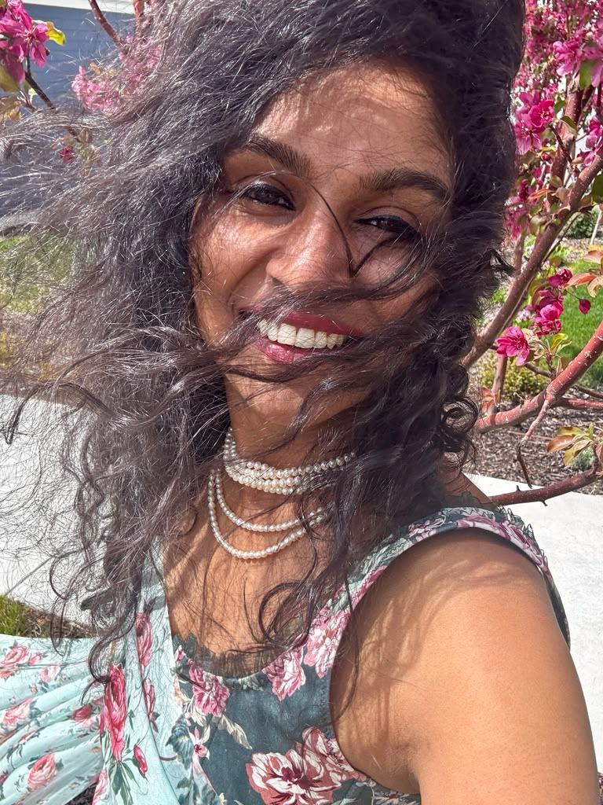
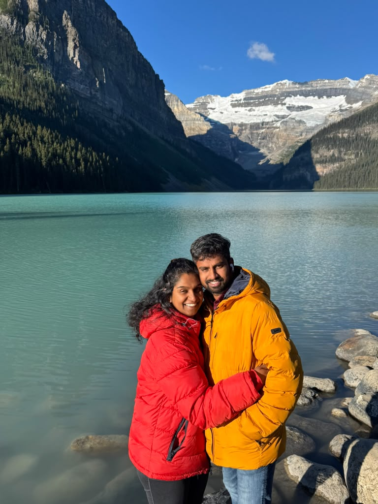

Welcome to Nirvana Photoworks. Our creative approach is shaped by an unexpected harmony. For over a decade, my husband and I navigated the high-stakes, fast-paced world of tech as IT professionals in the United States. That world taught us to look at the universe through a lens of absolute structural precision, balance, and fine detail.
When we turned our next corporate leaf and migrated north to make Canada our home, we chose to channel that exact deep-level observation into our lifelong true passion: fine-art photography. Together, we blend the analytical eye of an engineer with a tender appreciation for fleeting human connections.
While I direct the emotional framing, lighting styling, and intimate pacing behind the camera, my husband ensures the complex technology, logistical architecture, and digital post-processing rendering are flawlessly executed. We do not just click a shutter; we craft physical legacies that withstand generations.
Our tech background means we look at illumination mathematically—finding the perfect angles, contrasts, and deep shadows with architectural control.
Having crossed borders from the US to Canada, we intimately understand the immense value of archiving transitions, new milestones, and homecomings.
No transactional interactions. We design an intentional, unhurried space where your real chemistry and honest story take absolute precedence.